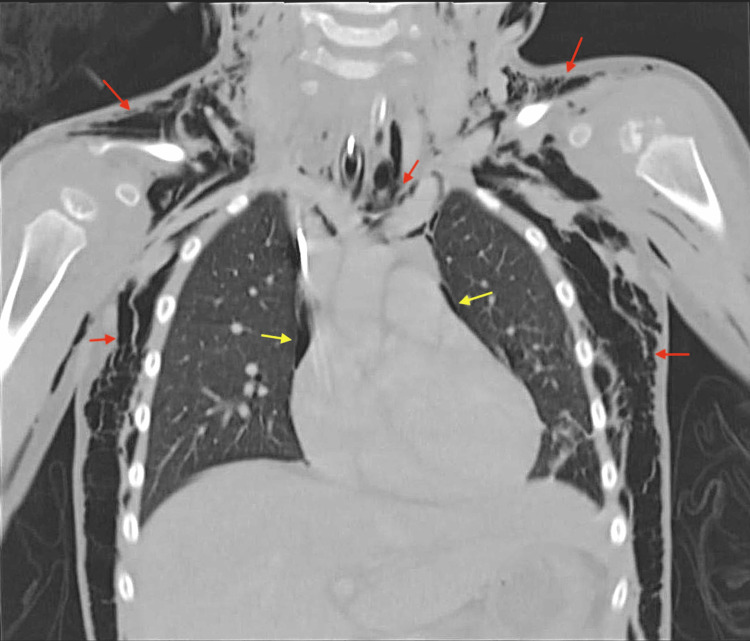
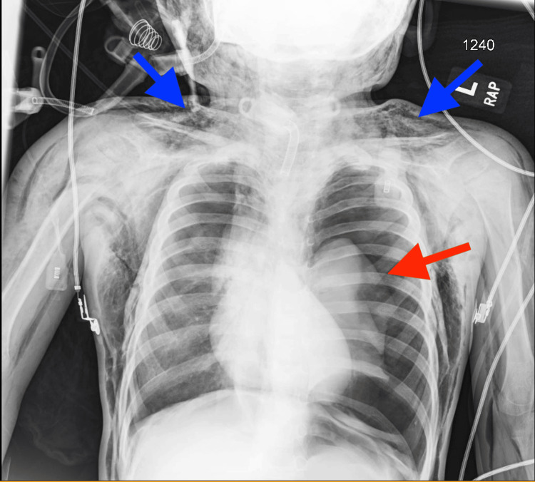
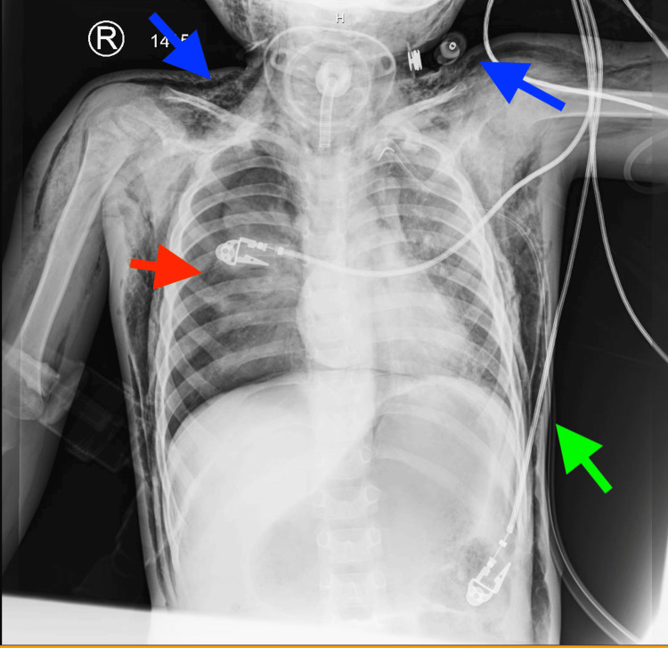
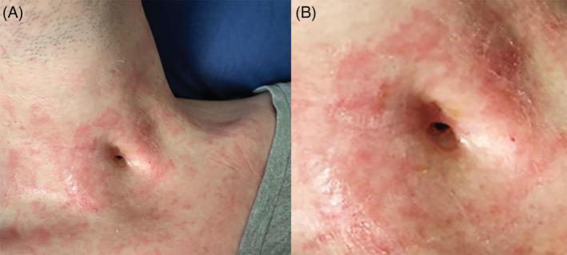

6175 — Rò khí–da sau cai ống mở khí quản ở trẻ (tracheocutaneous fistula): chờ tự đóng hay vá, và hội chứng rò khí sau vá
Tags: pattern:ro-khi-da pattern:khi-duoi-da pattern:tran-khi-mang-phoi pattern:khi-trung-that vung:khi-quan vung:co vung:nguc protocol:CT-co-nguc protocol:noi-soi-duong-tho protocol:PSG-bit-lo score:TCF-closure
Mức chắc chắn (certainty): tổng hợp y văn (literature synthesis) — ghép tổng quan thực hành tốt nhất về rò khí–da nhi (PMC11903927, CC BY-NC 4.0), đoàn hệ 19 trẻ cai ống với thời gian lưu ống dự báo phải mổ (PMC11887410, CC BY 4.0), 2 ca nguyên văn có ảnh về hội chứng rò khí sau vá (PMC12775883 và PMC13191400, CC BY 4.0) và 1 ca có ảnh lâm sàng rò tồn tại (PMC9585420, CC BY-NC-ND).
Câu chốt: hơn một nửa lỗ mở tự đóng, và 83,3% ca tự đóng xảy ra trong 1,5 tháng đầu — nên "chưa lành sau 1 tháng" không phải chỉ định mổ. Ngược lại, vá rò là phẫu thuật "nhỏ" nhưng có thể gây hội chứng rò khí nặng: khí thoát qua chỗ vá hở → khí dưới da cổ–ngực → tràn khí trung thất → tràn khí màng phổi hai bên tuần tự, và thở máy/áp lực dương là yếu tố làm nặng rõ rệt (khí mô mềm 33,3% khi có áp lực dương vs 16,7% khi không, p = 0,005).
Phân vai với bài khác: 6100 phủ chăm sóc ống, biến chứng và quy trình cai ống (rò khí–da chỉ một hàng ma trận); 649 phủ khí dưới da – khí trung thất do rò khí từ phổi và cách phân biệt với viêm trung thất hoại tử; 6123 phủ rối loạn nuốt – hít sặc sau mở khí quản. Bài này chỉ đi sâu đường hàn tồn tại sau cai ống: khi nào chờ, khi nào vá, vá kiểu gì, và đọc hình ảnh biến chứng rò khí sau vá.
1. Tổng quan bệnh học – cơ chế hình ảnh (TẠI SAO đường hàn không tự đóng, và TẠI SAO khí đi vào mô mềm)
1.1 Định nghĩa và dịch tễ — con số dao động rất rộng vì tiêu chuẩn "tồn tại" khác nhau
- Rò khí–da (tracheocutaneous fistula, TCF): đường hàn có biểu mô lót nối lòng khí quản cổ với da cổ trước, còn lại sau khi rút ống mở khí quản (PMC13191400).
- Tỷ lệ: 1–40%, đa số nghiên cứu 20–30% (PMC11903927); một tổng quan khác ghi 6–55%, cao hơn khi lưu ống lâu (PMC13191400); gộp 49 nghiên cứu biến chứng ống mở khí quản ở trẻ: rò khí–da 9,5% (PMC8047564, dẫn qua 6100).
- Tự đóng: > 50% lỗ mở đóng kín sau cai ống (PMC11903927). Trong đoàn hệ 19 trẻ cai ống thành công: 63,2% (12/19) tự đóng, 36,8% (7/19) phải mổ; thời gian tự đóng trung bình 1,5 tháng (7 ngày – 2,5 tháng), 83,3% trong số đó đóng trong 1,5 tháng (PMC11887410).
1.2 Yếu tố quyết định: thời gian lưu ống, không phải tuổi
| Biến | Tự đóng (n = 12) | Phải mổ (n = 7) | p |
|---|---|---|---|
| Thời gian lưu ống, trung bình | 7,8 tháng | 26,7 tháng | 0,022 |
| Lưu ống > 12 tháng | — | — | 0,045 |
| Tuổi đặt ống / tuổi cai ống | 4,5 / — | 4,3 / — | 0,932 |
| Chỉ định (tắc đường thở vs hỗ trợ thông khí) | 9 vs 3 | 4 vs 3 | 0,617 |
(số liệu PMC11887410, đoàn hệ 19 trẻ)
- TẠI SAO thời gian lưu ống quyết định: đường hàn được biểu mô hóa từ da vào trong trong nhiều tháng; một khi toàn bộ đường hàn đã có biểu mô lát, hai bờ không còn áp sát để dính — lỗ không thể đóng bằng co kéo tự nhiên (PMC11887410). Đây là lý do "chờ thêm" sau 6 tháng hiếm khi thành công ở trẻ đã lưu ống > 1 năm.
- Ngược lại, ở trẻ mới rút ống vài tuần, đường hàn còn mô hạt chưa biểu mô hóa → tự đóng nhanh (83,3% trong 1,5 tháng).
1.3 TẠI SAO hình ảnh nhìn thấy đường hàn, và TẠI SAO khí đi vào mô mềm
- Đường hàn chứa KHÍ: khí quản ~ −1.000 HU, mô mềm cổ +40 đến +60 HU. Trên CT cửa sổ mô mềm, đường hàn hiện thành cột khí (đen) xuyên qua mỡ trước khí quản từ da vào thành trước khí quản; đo được chiều dài đường hàn và đường kính lỗ bằng mm — đây là thứ nội soi không đo được.
- Khi chỗ vá hở: áp lực trong lòng khí quản cao hơn áp lực mô mềm mỗi khi ho, khóc, nín thở, hoặc thở máy. Khí đi theo đường ít trở kháng: mô mềm cổ trước → khoảng quanh khí quản → trung thất (khí trung thất) → màng phổi tạng–thành (tràn khí màng phổi). Vì vậy khí dưới da là dấu hiệu SỚM NHẤT, còn tràn khí màng phổi là hệ quả muộn hơn và có thể xuất hiện bên đối diện sau khi đã dẫn lưu một bên (PMC13191400).
- Vì sao áp lực dương làm nặng: thở máy/CPAP tạo gradient áp lực khí quản–mô mềm liên tục, không chỉ theo nhịp ho; do đó khí vào mô mềm nhanh và nhiều hơn. Số liệu: nhóm có áp lực dương 50% biến chứng vs 16,7% nhóm không (p = 0,015); khí mô mềm (dưới da/trung thất/màng phổi) 33,3% vs 16,7% (p = 0,005) (PMC12775883 dẫn Smith và cs.).
1.4 Tần suất biến chứng rò khí sau vá — vì sao phải đọc phim chứ không chỉ nhìn vết mổ
- Khí dưới da (subcutaneous emphysema, SCE): 3,6–3,8% (tổng quan hệ thống), 8,4% (đoàn hệ hồi cứu), 18% (case series), tổng hợp 3–20% tùy kỹ thuật và quản lý chu phẫu (PMC12775883, PMC13191400).
- Khí dưới da chỉ được báo cáo ở nhóm đóng thì đầu (primary closure), không gặp ở đóng thì hai trong các series nhi (PMC11903927) — đây là lập luận chính để ưu tiên đóng thì hai ở trẻ không có hẹp đường thở.
- Hệ quả của rò tồn tại (nếu không vá): mất ẩm đường thở, giảm hiệu quả ho (peak cough flow), ứ đọng đờm → nhiễm trùng tái diễn, và ảnh hưởng tâm lý – xã hội (PMC11903927).
2. Mẫu hình + chẩn đoán phân biệt theo vị trí (gamut)
2.1 Lỗ mở còn tồn tại sau cai ống — gamut theo "có đường hàn biểu mô hay không"
- Đường hàn biểu mô hóa (TCF thật): cột khí xuyên suốt da → khí quản, bờ lỗ liền, ướt/khô, có thể rò khí khi bịt mũi và thở mạnh hoặc sủi bọt khi nuốt/nói.
- Lỗ mở đang lành (chưa biểu mô hóa): nông, đáy là mô hạt đỏ, không thấy cột khí liên tục; đa số đóng trong 1,5 tháng (PMC11887410) → không can thiệp.
- U hạt quanh lỗ mở: mô hạt lồi, chảy máu khi chạm; thường hẹp giả đường thở khi thử bịt lỗ.
- Rò khí–thực quản (tracheoesophageal fistula): khác hoàn toàn — sặc khi nuốt, bụng chướng hơi, khí trong thực quản trên CT; tiền sử dị vật pin cúc áo/ống thông hoặc teo thực quản (PMC11887410 có 1 ca rò khí–thực quản do pin).
- Rò bẩm sinh vùng cổ (giáp lưỡi, khe mang): lỗ lệch đường giữa hoặc bên cổ, tiết nhầy từ nhỏ, không liên quan khí quản trên CT/fluoroscopy.
- Hẹp trên lỗ mở (suprastomal collapse) hoặc biến dạng chữ A: nguyên nhân thất bại cai ống, không phải nguyên nhân rò; phải loại trừ trước khi vá vì vá lỗ mà bỏ hẹp = trẻ vẫn khó thở.
2.2 Khí ngoài lòng sau vá — gamut theo khoang
- Khí dưới da cổ–ngực: sớm nhất, sờ crepitus; trên phim dải sáng dọc các lớp cơ.
- Khí trung thất: dải khí dọc bờ trái khí quản/thực quản, dấu liên tục với khí dưới da cổ.
- Tràn khí màng phổi: có thể hai bên và tuần tự; bên đối diện có thể xuất hiện sau khi dẫn lưu bên thứ nhất (PMC13191400).
- Tràn khí phúc mạc / khí sau phúc mạc: hiếm, khi khí theo khoảng quanh mạch máu xuống dưới.
3. Bảng so sánh phân biệt (ma trận đối chiếu)
| Thực thể (entity) | Hình ảnh điển hình | Chốt vào (rule-in) | Chốt loại (rule-out) | Gợi ý xác nhận |
|---|---|---|---|---|
| TCF thật (đường hàn biểu mô) | CT cửa sổ mô mềm: cột khí liên tục da → thành trước khí quản, đường kính đo được (mm); không có mô hạt đáy | Cột khí xuyên suốt + tồn tại > 3–6 tháng + đã lưu ống > 12 tháng | Đáy là mô hạt, không thấy cột khí → lỗ đang lành | Nội soi + đo lỗ; thử bịt lỗ (occlusion test) |
| Lỗ mở đang lành | Nông, không có cột khí liên tục; CT: không thấy đường hàn tới khí quản | Mới cai ống < 1,5 tháng và không rò khí | Cột khí liên tục → TCF | Theo dõi 1,5–3 tháng, không mổ |
| Rò khí–thực quản | Khí trong thực quản, mức khí–dịch thực quản, có thể thấy đường hàn trên CT/fluoroscopy uống cản quang | Sặc khi nuốt + bụng chướng hơi + khí thực quản | Không sặc, không khí thực quản → không phải | Nội soi thực quản–khí quản, uống cản quang |
| U hạt lỗ mở | Khối mô mềm quanh lỗ, không xuyên vào lòng khí quản | Chảy máu khi chạm + lồi ra ngoài | Khối xuyên vào lòng → nghĩ u/nhú | Nội soi, sinh thiết nếu cần |
| Khí dưới da sau vá | Phim thẳng: dải sáng trong mô mềm cổ–ngực; CT: khí dọc các lớp cân, không trong màng phổi | Crepitus + dải khí mô mềm | Khí trong khoang màng phổi → tràn khí màng phổi | CXR + CT cổ–ngực |
| Tràn khí màng phổi | Đường bờ màng phổi tạng, mất tuần hoàn phổi ngoại vi; nằm ngửa: dấu rãnh sâu (deep sulcus) | Bờ màng phổi tạng nhìn thấy + lệch trung thất khi căng | Chỉ dải sáng mô mềm → chưa có tràn khí | CXR, CT; siêu âm đầu giường nếu cấp |
| Khí trung thất | Dải khí bờ trái khí quản, liên tục với khí cổ | Khí dọc khí quản + khí cổ | Không liên tục với cổ → nghĩ khí thực quản/khác | CT ngực |
Đọc phim theo thứ tự — đừng dừng ở dấu hiệu đầu tiên
- Bờ màng phổi tạng hai bên (kể cả đáy phổi khi phim nằm).
- Khí mô mềm cổ → ngực → cánh tay (đối chiếu hai bên, vì khí lan rất xa).
- Trung thất: dải khí quanh khí quản, khí quanh động mạch phổi.
- Vị trí dẫn lưu (nếu có): dẫn lưu còn hở? khí còn thoát?
4. Protocol chụp + quyết định chờ/vá (hệ phân độ thực hành)
4.1 Chẩn đoán hình ảnh
- CT cổ–ngực không cản quang, lát ≤ 1–2 mm, cửa sổ mô mềm + cửa sổ phổi — chỉ định khi: (a) nghi rò khí sau vá, (b) cần đo đường hàn/lỗ trước mổ, (c) trẻ không hợp tác để khám lâm sàng đáng tin. Luôn đọc cả hai cửa sổ: cửa sổ phổi bỏ sót khí mô mềm, cửa sổ mô mềm bỏ sót tràn khí nhỏ.
- X-quang ngực thẳng ngay khi có triệu chứng sau vá (thở nhanh, giảm SpO₂, phù mặt–cổ); nếu trẻ nằm, tìm dấu rãnh sâu.
- Siêu âm phổi đầu giường (nếu có người làm): mất dấu trượt màng phổi (lung sliding) + dấu bờ phổi (lung point) = tràn khí; nhanh hơn chờ phim ở trẻ đang xấu.
- Nội soi đường thở (ống mềm/ống cứng) trước mọi ca vá: đánh giá tĩnh và động, tìm hẹp trên lỗ mở, biến dạng chữ A, mô hạt, liệt dây thanh; thử bịt lỗ (occlusion test) dưới gây mê nhẹ để xem trẻ có chịu được khi bịt kín.
- PSG có băng bịt lỗ khi nghi ngưng thở tắc nghẽn — vì còn lỗ mở là "van xả" che mất tắc nghẽn khi ngủ; bịt lỗ làm tắc nghẽn lộ ra → phải xử lý trước khi vá (PMC11903927).
4.2 Quyết định: chờ – vá thì hai – vá thì đầu
flowchart TD
A[Trẻ cai ống, lỗ mở còn rò khí] --> B{Thời gian sau cai ống}
B -->|Dưới 1,5 tháng| C[Theo dõi: 83,3% tự đóng trong 1,5 tháng]
B -->|1,5–6 tháng| D{Nội soi: hẹp trên lỗ mở / chữ A / ngưng thở khi bịt lỗ?}
B -->|Trên 6 tháng hoặc lưu ống trên 12 tháng| D
D -->|Có hẹp hoặc tắc nghẽn| E[LTR một thì + vá; xử lý hẹp TRƯỚC]
D -->|Không hẹp| F[Vá: ưu tiên ĐÓNG THÌ HAI]
F --> G{Có thở máy / áp lực dương sau mổ?}
G -->|Có| H[Giảm áp lực, rút ống khi còn tự thở; theo dõi sát khí mô mềm]
G -->|Không| I[Theo dõi 24 giờ: crepitus, SpO2, CXR khi có triệu chứng]
- Ngưỡng thời gian: y văn đề xuất chờ 6 tháng, nhưng hai nghiên cứu lớn vá sớm hơn 6 tháng ở hơn một nửa số ca, sớm nhất 1 tháng (PMC11903927). Thực hành hợp lý: chờ 1,5–3 tháng nếu lỗ nhỏ, trẻ không triệu chứng; vá khi > 6 tháng hoặc lưu ống > 12 tháng (p = 0,045) hoặc rò khí gây giảm ho/nhiễm tái diễn.
- Không có ngưỡng mm được hội chứng nhận cho "lỗ lớn phải mổ" — quyết định dựa thời gian + triệu chứng + đánh giá nội soi, không dựa một mình đường kính. (Ca minh họa dùng ống 3,5 mm uncuffed — PMC13191400 — chỉ là mô tả, không phải ngưỡng.)
4.3 Chọn kiểu vá — số liệu so sánh
| Tiêu chí | Đóng thì đầu (primary) | Đóng thì hai (secondary intention) |
|---|---|---|
| Đóng kín | Không khác biệt (p = 0,48) | Không khác biệt |
| Biến chứng chung | p = 0,55 | p = 0,55 |
| Cần mổ lại | p = 0,62 | p = 0,62 |
| Nhiễm vết mổ | p = 1,00 | p = 1,00 |
| Bục vết mổ | p = 0,82 | p = 0,82 |
| Thời gian mổ + nằm viện | Dài hơn | Ngắn hơn (p < 0,001) |
| Khí dưới da | Có báo cáo | Không gặp trong series nhi |
(tổng quan hệ thống + đoàn hệ, PMC11903927)
5. Biến thể bình thường và cạm bẫy
- "Lỗ mở chưa lành" bị gọi là rò: trong 1,5 tháng đầu, đa số sẽ đóng (83,3%) — mổ sớm là can thiệp thừa ở trẻ còn mô hạt.
- Khí dưới da bị gọi là phù dị ứng/angioedema: sau vá rò, phù mặt–cổ xuất hiện nhanh trong 10 giờ kèm khó thở; phù dị ứng không có crepitus. Ca PMC12775883: trẻ 4 tuổi, phù toàn thân–cổ–mặt 10 giờ sau mổ, sờ crepitus, CT cho thấy khí dưới da lan + tràn khí màng phổi nhỏ → phải mở lại vết mổ, đặt dẫn lưu, thở máy.
- Bỏ sót tràn khí bên đối diện: sau khi dẫn lưu một bên, luôn chụp lại; ca PMC13191400 có tràn khí phải xuất hiện sau 1 giờ dù đã dẫn lưu trái.
- Chỉ đọc cửa sổ phổi trên CT: bỏ sót khí mô mềm (cửa sổ phổi làm mô mềm "trắng xóa"); ngược lại, chỉ đọc cửa sổ mô mềm bỏ sót tràn khí nhỏ.
- Thỏa mãn tìm kiếm (satisfaction of search): thấy khí dưới da rồi dừng → bỏ tràn khí màng phổi và khí trung thất, là hai thứ quyết định can thiệp.
- Vá lỗ khi chưa loại trừ hẹp trên lỗ mở: trẻ vẫn khó thở sau "vá thành công"; luôn nội soi trước và sau.
- Không có "TCF bình thường": lỗ mở có đường hàn biểu mô không tự đóng — đừng hứa với gia đình là "chờ sẽ khỏi" khi đã lưu ống > 1 năm.
6. Tự lượng giá — Blind Quiz
Ca 1 — Trẻ 4 tuổi, 10 giờ sau vá rò khí–da, phù mặt–cổ, khó thở. Nhìn CT trước khi đọc đáp án.

- Gợi ý lâm sàng: vá rò thì đầu, hậu phẫu 10 giờ, phù lan nhanh, sờ thấy lạo xạo dưới da.
- Câu hỏi: (1) Khí nằm ở những khoang nào? (2) Có tràn khí màng phổi không, bên nào? (3) Ba việc phải làm ngay?
Bấm để hiện đáp án (findings + chẩn đoán)
- Dấu hiệu: khí (đen) lan trong mô mềm cổ, thành ngực hai bên và cánh tay (mũi tên đỏ); tràn khí màng phổi nhỏ hai bên (mũi tên vàng) — bờ màng phổi tạng tách khỏi thành ngực.
- Chẩn đoán: hội chứng rò khí sau vá rò khí–da — khí thoát qua chỗ vá khí quản chưa kín, đi theo mô mềm cổ → trung thất → màng phổi. Vì sao lan xa: áp lực khí quản cao hơn mô mềm khi ho/khóc/thở máy, khí theo đường ít trở kháng giữa các lớp cân.
- Xử trí (theo ca gốc): mở vết mổ + đặt dẫn lưu, đặt lại ống mở khí quản/ống nội khí quản để bảo vệ đường thở, thở máy áp lực thấp, theo dõi sát; khí dưới da hết sau vài ngày.
- Nguồn ảnh: Cureus 2026 — PMC12775883 — CC BY 4.0 (Hình 3, nguyên bản).
Ca 2 — Trẻ 3 tuổi sau vá rò khí–da: khó thở ngay sau rút ống, SpO₂ tụt 70%. Xem hai phim liên tiếp.

- Câu hỏi: Bên nào có tràn khí? Dấu hiệu nào cho biết đây là khí ngoài màng phổi chứ không phải chỉ khí dưới da?
Bấm để hiện đáp án
- Dấu hiệu: tràn khí màng phổi trái (mũi tên đỏ) với khí dưới da cổ–ngực lan rộng (mũi tên xanh); phổi trái xẹp gần hoàn toàn.
- Chốt: bờ màng phổi tạng thấy được + mất tuần hoàn phổi ngoại vi = tràn khí; khí dưới da chỉ là dải sáng trong mô mềm, không tạo bờ màng phổi.
- Nguồn ảnh: Cureus 2026 — PMC13191400 — CC BY 4.0 (Hình 1, nguyên bản).
Ca 2 (tiếp) — 1 giờ sau đặt dẫn lưu trái, trẻ vẫn khó thở:

- Câu hỏi: Phổi trái đã nở chưa? Có gì MỚI ở bên phải? Vì sao phải chụp lại?
Bấm để hiện đáp án
- Dấu hiệu: phổi trái nở lại với dẫn lưu (mũi tên xanh lá); tràn khí màng phổi PHẢI mới xuất hiện (mũi tên đỏ); khí dưới da vẫn còn.
- Bài học: rò khí từ chỗ vá là nguồn liên tục — dẫn lưu một bên không chặn khí sang bên kia; phải chụp lại sau mỗi can thiệp và tìm tràn khí tuần tự hai bên.
- Nguồn ảnh: Cureus 2026 — PMC13191400 — CC BY 4.0 (Hình 2, nguyên bản).
Ca 3 — Trẻ đã cai ống 3 tháng, mẹ than "vẫn còn lỗ, thỉnh thoảng sủi bọt khi tắm".

- Câu hỏi: Đây là "lỗ mở chưa lành" hay rò thật? Cần làm gì trước khi quyết định vá?
Bấm để hiện đáp án
- Dấu hiệu: lỗ tròn, bờ liền, biểu mô hóa, không thấy mô hạt đỏ ở đáy — phù hợp đường hàn biểu mô (TCF thật); rò khí khi tắm/bịt mũi thở mạnh.
- Chẩn đoán: rò khí–da tồn tại — với 3 tháng sau cai ống, khả năng tự đóng thấp (83,3% ca tự đóng đã đóng trong 1,5 tháng).
- Trước khi vá: nội soi đánh giá tĩnh + động (hẹp trên lỗ mở, chữ A), thử bịt lỗ, cân nhắc PSG có bịt lỗ; đo đường hàn trên CT nếu cần; ưu tiên đóng thì hai nếu không hẹp.
- Nguồn ảnh: Respirology Case Reports 2022 — PMC9585420 — CC BY-NC-ND 4.0 (Hình 1, nguyên bản, không chỉnh sửa).
Bài liên quan chéo
- 6100 – Chăm sóc và cai ống mở khí quản ở trẻ (quy trình cai ống, biến chứng chung)
- 649 – Tràn khí dưới da & khí trung thất ở trẻ (rò khí lành tính từ phổi, phân biệt viêm trung thất hoại tử)
- 061 – Tràn khí trung thất (đọc phim, chẩn đoán phân biệt)
- 6101 – Xẹp phổi một bên tái diễn ở trẻ BPD/TBM (khi trẻ khó thở sau cai ống)
Ảnh
- 6 ảnh CT/X-quang từ PMC12775883 và PMC13191400 (CC BY 4.0) — tải về, ghi nguồn từng file trong
images/CREDITS.md. - 1 ảnh lâm sàng từ PMC9585420 (CC BY-NC-ND 4.0) — nguyên bản, không crop/ghép.
- Không dùng ảnh nội soi/ảnh mổ từ nguồn không rõ giấy phép.
Không dùng để chẩn đoán độc lập khi chưa có người hướng dẫn.